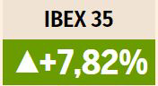
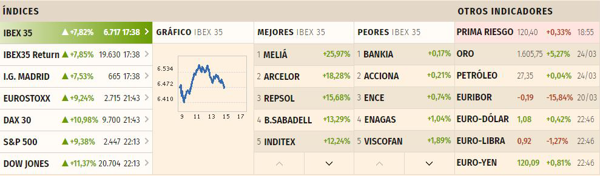

El Ibex se dispara un 7,8% en su mayor subida en diez a�os y recupera los 6.700 puntos
Jornada de euforia en los mercados mundiales. El pr�ximo levantamiento del cierre de Wuhan, el epicentro inicial del coronavirus, y el inminente acuerdo en el Congreso estadounidense para aprobar un plan de est�mulos de dos billones de d�lares desatan las compras entre los inversores. Las Bolsas europeas se han disparado y el Ibex se ha anotado un alza del 7,82% hasta los 6.717,30 puntos en su mejor sesi�n en diez a�os.
Las Bolsas han vivido una jornada de euforia con la llegada de alguna buena noticia. Los mercados descuentan un inminente acuerdo final entre Republicanos y Dem�cratas para lanzar un plan de est�mulos adicional de dos billones de d�lares en EEUU. Adem�s, desde el anuncio sorpresa de la Fed, los mercados cuentan con nuevos planes adicionales de rescate de la econom�a, como el anunciado hoy en Corea del Sur. Pero la mayor novedad hoy no procede tanto del �mbito econ�mico o monetario. Los inversores ven la luz al final del t�nel en China. Las autoridades del gigante asi�tico han levantado desde hoy las restricciones al tr�fico en la provincia de Wuhan, y a partir del 8 de abril levantar�n el cierre de la ciudad que se convirti� inicialmente en el epicentro de la pandemia del coronavirus. La medida deja patente el car�cter temporal de la situaci�n excepcional creada por el virus, y muestra el camino hacia una progresiva normalizaci�n de la actividad social y econ�mica.
La renta variable de Asia ha reaccionado al inminente fin del bloqueo de Wuhan con una de las mayores subidas desde el estallido de la crisis del coronavirus. El Nikkei de Tokio se ha disparado m�s de un 7%, y el Kospi de Se�l un 8,6%, alentado tambi�n por los 80.000 millones de d�lares de ayuda anunciados por el Gobierno coreano.
El optimismo se traslada tambi�n a Wall Street, con subidas que superan el 9% en el Dow Jones, y esta oleada alcista inunda tambi�n los mercados europeos, que no se ven sorprendidos a estas alturas por el desplome de un indicador macro como el PMI compuesto de la eurozona.
La Bolsa espa�ola se ha unido a la oleada alcista de los mercados. El Ibex se ha disparado un 7,82% hasta los 6.717,30 puntos y pone tierra por medio con los m�nimo de hace ocho d�as en los 6.100 puntos. El selectivo espa�ol ha firmado su mejor sesi�n en diez a�os.
Los bancos, hundidos a m�nimos hist�ricos con la crisis y con las m�s de 40 rebajas de tipos aprobadas a nivel mundial en apenas un mes, se han sumado a la remontada generalizada en los mercados. La mayor parte de las miradas las acaparaba Santander, que anunci� anoche la reducci�n a un �nico pago del dividendo de 2020. Las acciones del banco han subido un 12,01%. Sabadell se ha revalorizado un 10,29% y BBVA ha sumado un 8,71%.
Uno de los valores m�s castigados del Ibex en la sesi�n de ayer, Acciona, contaba hoy a su favor con las sorprendentes previsiones anunciadas por su participada alemana Nordex, disparada m�s de un 20% en Bolsa. Sin embargo, sus t�tulos apenas han subido un 0,21% tras la rebaja de recomendaci�n, hasta 'vender', emitida por los analistas de Citigroup.
La empresa del Ibex m�s castigada en lo que va de a�o, IAG, se ha unido a las subidas. La aerol�nea ha remontado el vuelo en Bolsa con alzas del 6,38%, con los inversores muy atentos al levantamiento de las restricciones en China y a las posibles ayudas que podr�a recibir la empresa para poder recuperarse del azote de la crisis del coronavirus en el sector. Sin abandonar el sector a�reo, Aena se ha anotado avances del 4,45% tras confirmar que estudia la cancelaci�n de su dividendo por la dr�stica ca�da de los ingresos. Otro valor relacionado con el sector tur�stico, Meli�, ha sido el mejor de la jornada, al anotarse un avance del 25,97%.
La remontada del petr�leo supone todo un est�mulo para las empresas m�s vinculadas con las materias primas. Repsol ha remontado un 12,85%, y ArcelorMittal se ha disparado un 18,28%
Las esperanzas de una pr�xima normalizaci�n en China dan alas a la remontada de Inditex. El gigante textil, que tiene en el gigante asi�tico su segundo mayor mercado, se ha revalorizado un 12,24%, hasta superar los 23 euros por acci�n.
El resto de Bolsas europeas han acelerado igualmente su remontada espoleada por las referencias alcistas de Wall Street. Las crecientes medidas de confinamiento en Europa ahondar�n el par�n econ�mico, pero acortan de paso el fin del periodo excepcional provocado por el coronavirus. La mayor estabilidad lograda en el mercado de deuda a ra�z de las ayudas de gobiernos y bancos centrales y el ejemplo de los progresos en Wuhan han animado a los inversores a lanzarse a la compra en Bolsa. As� el Dax alem�n ha subido un 10,98%; el Cac franc�s, un 8,39%; elMib italiano, un 8,93% y el FTSE brit�nico, un 9,05%.
En el Euro Stoxx, grandes valores como Daimler, Safran, ING, Vokswaggen o Munich Re han cerrado con revalorizaciones en el entorno del 20%. Entre las subidas m�s destacadas de la jornada figura Nordex. La empresa controlada por Acciona se ha disparado un 33% al sorprender con sus previsiones de negocio.
El petr�leo se une a la remontada predominante en los mercados. La menor aversi�n al riesgo acelera el rebote del barril de Brent hacia los 28 d�lares. El barril tipo West Texas, de referencia en EEUU, se acerca a los 24 d�lares, m�s lejos de los m�nimos de 20 d�lares que toc� la semana pasada.
Aunque desde que el BCE lanzara su programa de compra de deuda de 750.000 millones de euros, los cambios se han reducido, las compras en renta variable se traducen en ventas en la renta fija. El inter�s del bono espa�ol sube hasta el 0,85%, y la prima de riesgo se sit�a en 120 puntos b�sicos.
La resaca del anuncio de la Fed de realizar comprar ilimitadas de deuda mantiene debilitado al d�lar. El euro ampl�a su remontada al filo de los 1,08 d�lares, mientras que la libra supera los 1,17 d�lares.
